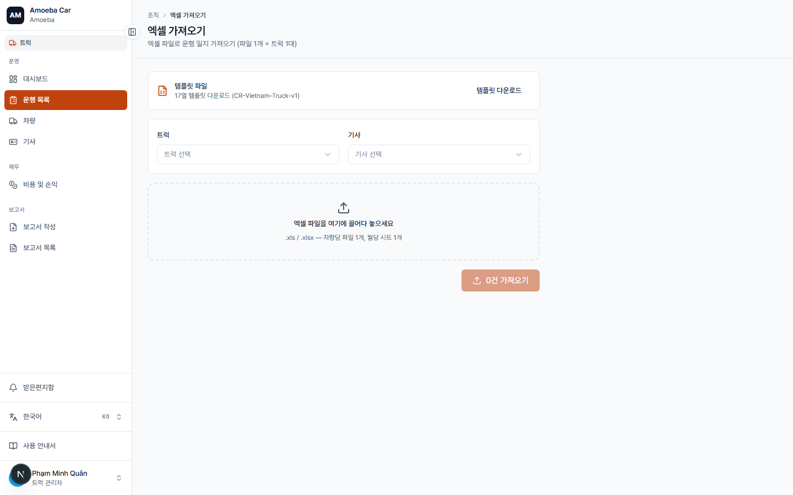
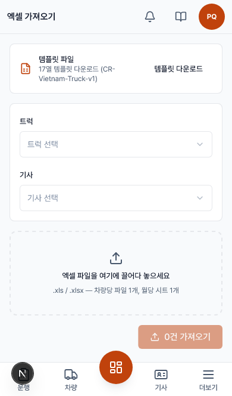

엑셀 가져오기
- URL
/truck/import- 목적
- 다른 곳에 있던 운행 데이터를 엑셀로 일괄 등록


사용 단계
- 템플릿 다운로드로 올바른 열 구조 확인.
- 파일 전체에 적용할 차량과 기사 선택(파일 하나 = 차량 1대 + 기사 1명).
- 작성한
.xlsx/.xls파일을 드래그하거나 선택. - 시트가 여러 개면 시트 선택에서 가져올 시트 선택 — 시트 하나 = 한 달.
- 열 매핑 확인: 열 이름으로 자동 추정되며 수동 변경 가능. 날짜 열은 필수.
- 미리보기 표에서 유효(초록)·오류(빨강, 주로 날짜 누락) 행 수 확인.
- N행 가져오기 클릭 — 유효한 행만 등록됨.
로직 / 규칙
- CR-Vietnam-Truck-v1 템플릿은 17개 열(차량(번호판) 열 포함 — 차량·기사는 위에서 별도로 선택하므로 참고용). 앱이 실제로 읽는 열은 16개: 날짜, 출/도착 시각, 고객, 상차/하차지, 시작/종료 km, 연료량+단가, 통행료, 기타비용+메모, BOL, CDF, 매출.
- 가져오기 성공 시 방금 가져온 달로 필터된 운행 일지로 바로 이동해 확인 가능.
- 이미 보고서가 작성된 달/지역이어도 가져오기는 가능(잠금 없음) — 가져온 후 보고서를 다시 작성해 공식 수치를 갱신하세요.